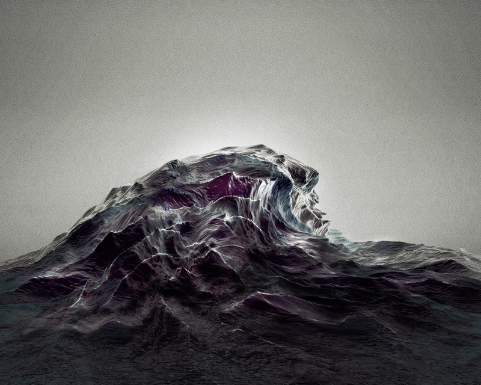

Sougwen 愫君 Chung is a Chinese-Canadian artist and (re)searcher based in New York. Chung’s work explores the mark-made-by-hand and the mark-made-by-machine as an approach to understanding the dynamics of humans and systems. Chung is a former research fellow at MIT’s Media Lab and a pioneer in the field of human-machine collaboration. In 2019, she was selected as the Woman of the Year in Monaco for achievement in the Arts & Sciences.
How did you get into art?
I got into art through music; my father was an opera singer, so I grew up in a household that had a deep appreciation for the musical arts. I played the violin from an early age, which became a big part of my creative wayfinding. As a quiet child there were a lot of things I wanted to express but didn’t know how to, so I found that vehicle for expression through playing instruments.
When did the leap to visual art occur?
The first encounter with visual art that felt meaningful to me was when I started making work on the computer. My mother was a computer programmer, so I’d been around technology from childhood, in addition to music. I fell quite deeply into making websites, coding my first website when I was nine, I think. I still recall my first image tag fondly, and that translation from code in HTML to a visual graphic on screen, to a URL that could be shared and experienced on the other side of the world. It was so exciting at the time—looking back, it really changed everything.
You’ll never forget your first image tag.
Yeah, you really don’t, right? You didn’t know that you could have that power to effect technology, especially back then. In the early days of the internet, you had to do everything manually in order to show your work to the world, like hand-coding HTML, setting up your own FTP servers, and uploading to Angelfire. It felt dynamic because not only could you manipulate something on screen, but you could also show it to all of your friends who were geeky enough to be online or have a computer. So, I guess you could say I started exploring visual art through on-screen graphics. Honestly, for a long time the two were synonymous. Visual art was digital art to me.
Sougwen Chung, High Tide Etude Op 2, 2012
When did it become a legitimized art form for you?
I’m not sure if I think about art in terms of legitimacy or not. Probably to the contrary, what’s really powerful about art practice is its potential generosity. It necessarily evades definition, or legitimization.
As far as my work goes, a lot of what I do today is inspired by creating new forms of collaboration; thinking about machines or environments as creative catalysts. It stems from an interest in thinking about authorship and technology. Because I started so young with computers, after a while I wondered, where was my creative agency in software? As I became proficient with the tools as an expert, I felt there was something missing.
I found that I missed physical gesture when working with computers—specifically the gestural instincts I’ve developed through violin and drawing. Sometimes working with software and code can feel like one is relegated to the screen. So that feeling led me to explore working with robots through the medium of performance, to re-engage with physical spaces. Robots are typically regarded as industrial tools, but I’ve always thought of them as a kind of kinetic sculpture. Being able to invent my own human/machine collaboration processes has been really empowering.
How do you define value for your work? Is it an experience?
You could say that digital art is infinitely replicable, and performance art is inherently ephemeral, compared to the material qualities of painting, for instance. But the art world and art market function on scarcity. If something is infinitely replicable or inherently ephemeral, then what is its value? Does it undermine its value as an art form?
There’s an Agnes Martin story that I’m going to paraphrase poorly: a little girl went into her studio. Martin held up a rose and asked if it was beautiful. The girl said it was. Then Martin put it behind her back and asked the child again, if the rose was still beautiful. The child still said yes—positing that the art that is being experienced is actually the aesthetic sensation that happens within the viewer.
I’ve always really liked that, that the value of the work occurs within the experiencer of the work. It’s probably what a lot of artists who started in the digital realm feel, too, and what drew me towards the ephemerality of performance, eventually. Rather than define the value as an authority, why not accept the situatedness of valuation? It’s there and then it’s not. That’s what makes it interesting.
How important do you think it is to be interdisciplinary today?
On some level, we are all interdisciplinary today, don’t you think? Digital technology is so embedded in our everyday culture. Even if you are a painter, you still check your email and use your phone, or have some sort of online presence, and are influenced by other mediums and disciplines. When I think about being interdisciplinary under the umbrella of art and technology, I can see the value of being able to experience your practice in ways that you experience your regular life.
In my studio, you can still find paints, canvases… material mess. But there’s also robotics, intangible codes, and deep learning. I think that’s why I like to show my process as part of the work—it’s important to communicate that one can engage in technologies without feeling necessarily like they are losing some inherent spirit of their practice.
I’ve become more comfortable not just occupying one space, but traversing different environments. Drawing, however, is still one of the foundations of my practice and still continues to feel like safe harbor no matter how my work evolves.
How does it feel working with non-sentient collaborators?
I often perform with either multiple robotic painting linked units (20, in one instance), or one to several robotic arms. Part of what interests me in my performances is the exploration of the rawness of that interaction between myself and the machines. It’s a process of negotiation, wayfinding, and tension. When you watch the edited footage of these performances, they can look rather elegant or serene. That’s really an incomplete picture.
It’s not always comfortable, working with a non-sentient unit, even if I’ve designed the system of interactions myself. It can sometimes feel like staring into the void. It’s not exactly as straightforward as verbal communication might be with a human collaborator, and you become very aware that empathetic cues in body language do not exist in the same way.
How does a programmed robotic unit respond to you? How much expression is you versus the machine?
The units respond to a variety of inputs that have developed over time. It began as a gesture-based approach, using a recurrent neural network. My line is recorded in real time, either through an overhead camera or a sensor on the tip of the brush that turns my positional data into something that can be read by the system.
The system as articulated by the robotic units then outputs a set of positions based on an interpretation of my own drawing archives from the past 20 years. It’s a multi-step process that constructs a feedback loop of my own drawing style.
During this last year, I’ve been integrating my own biometrics: data of my heart rate or brain waves. I’m trying to think about ways that humans connect to mechanical and artificial systems, and vice versa, and ways that can function as a creative catalyst.
How can you be creative within a programmed set of rules?
When I take the digital simulation into physical space, I find adaptation to the errors and glitches in the process uniquely stimulating. Thrilling, even. It feels more true to how life actually is, full of the encounter with unmediated moments that go wrong. Sometimes I think creativity is working with imperfections and mess, and seeing how one adapts to them.
So much can go wrong in reality. For example, even something as simple as voltage could be a problem if you are traveling to different countries. And that opens up creative opportunities?
“Opportunities” is definitely a disposition. I have so many stories from my experiences. One time I debuted a work in which the wheels of several of the robotic units slipped off their paths due to the viscosity of the paint on the canvas. The digital trial simulation did not register the physics or the materiality of the medium.
I love that. It feels human, too, because you’re dealing with practical concerns.
When you see these robotic units slipping in that way, it creates a different kind of artistic activation. The audience sympathizes with the robotic units in a humanizing moment of the fallibility of the machine, but also of the human who tried to work with it. Live and learn.
Do you then work with humans?
Working with the robotic units has made me more interested in collaborating with humans. I’m constantly working with other collaborators now in defining what algorithmic drawing can be today. It’s become broader in scope in a way I didn’t anticipate. It’s far more than just me drawing in a performance. It’s enabled me to take on different roles in the creative process. Behind the scenes, there’s an interconnectedness of various collaborators in an interdisciplinary ecosystem, each bringing a different perspective and skillset to the table.
What’s a day in the studio like for you?
I was actually on the road for years and didn’t have a studio. I found the city then to be a little bit anxiety-inducing. In true samurai style, I worked through my mobile studio setup, traveling with a bag and a robot. That was actually a formative time for me.
I just started Studio Scilicet in 2019. It’s about thinking about the traditional artist studio as a locus for an ecology of creativity within a capitalist system. I like the idea of an art studio as a new form of creative expression in and of itself, something like a social sculpture.
That’s one mode of the studio; the other is sanctuary. Sometimes it’s just me working in isolation, essentially just drawing for days on end. I really enjoy drawing and pushing what’s achievable with the machines through that feedback loop, the open-endedness of it.
Sometimes I invite visiting artists in as residents to focus on their practice when I’m traveling on projects. We live in New York where it’s hard to find a sense of sanctuary and calm, so this latter mode is essential, and it’s been a privilege to invite practitioners I respect into a space of my own making.
Do you ever feel like you need gallery representation?
I feel if you’re doing something new that’s maybe a bit uncharted, galleries might not know how to work with you yet. I’ve found that being solely reliant on a gallery becomes too great of a risk—one that doesn’t make sense if you’re doing something that doesn’t sit comfortably anywhere.
And also for someone who had an itinerant practice for years, my practice has been shaped by a poly-geographic sensibility. I aspire to be as comfortable making this work in New York as I am in Berlin or Shanghai. I’m interested in that kind of autonomy—I’ve found it to be an asset when working in the space I’m in, and trying to define a territory for myself, both literally and metaphorically. As there isn’t yet a genre or industry for human-robotic-drawing performances, a certain fluidity is essential in making one’s own way in the world.
As an independent artist, how do you get your projects out there?
I share the process… maybe I live a little bit in it. The projects exist in their own world online; it looks, sounds, smells, feels like something. It’s part of the exploration, which I really do enjoy sharing as a kind of meta narrative. I think that impulse comes from my background as an early internet user. If you can communicate in a way that everyone feels they’re being spoken to, maybe they will feel like they can contribute to your story and get behind what you’re doing.
You have many projects. How do you decide which to take on or decline?
I’m interested in many different things, and I’m a believer in randomness. Generally, I’m trying to say yes to people and projects I feel some connection with. I recognize when people are also trying to be inventive in their own respective gambit. I find it energizing when that dedication and value system is evident… Ultimately it’s an intuition which has done right by me so far.
I’ve been thinking about how I can align with projects that support a culture that I want to see thrive. Not only am I going to say yes to those things, but I’ve been actively seeking them out. I’m trying to be more judicious in what I say yes and no to, which is still really hard as everything, to a degree, is interesting to me.
How did your TED Talk come about?
TED was unexpected and still a bit surreal, probably because it happened rather quickly after they reached out. That’s the thing about putting things on social media, right? They found my work and felt that it was creating a space for things that hadn’t been said, centered around collective authorship and collaboration.
That being said, I knew when I was preparing the talk that I didn’t want it to be focused solely on me. Accessible to everyone; sure. But with the opportunity of such a large audience in front of me, I wanted to talk about the larger idea of collective collaboration. The talk actually inspired me to launch my studio, Scilicet (which is Latin for “permitted to know”). That’s the thing about opportunity; it empowers you to assume a bigger identity.
Scilicet is an interdisciplinary lab exploring human and non-human collaboration. It stems in part from the observation that it’s been harder for people to get funding for the arts. I wanted to create a vehicle that could help support and incubate ideas that I really believe in, that are beyond what I would do in my own practice. I feel that’s something sorely needed right now.
In a way, you are an entrepreneur…
There’s this idea that in order to make art or to have an art practice, you have to have a gallery, or you need to have a trust fund, or institutional support. I don’t have any of that, and I think that keeps people afraid of making the work they are meant to make. I’ve definitely felt that at various stages in my life. Nowadays, for my part, I’m just trying to share my work and interests with as many people as possible. I guess on some level that looks like entrepreneurism.
I’ve been steered by this notion of “going where you are rare,” of trying to not limit myself to one discipline, approach, or industry. It takes a bit of focus, and the practice has evolved into what I’m doing now. It is far more than I could have imagined when I started.